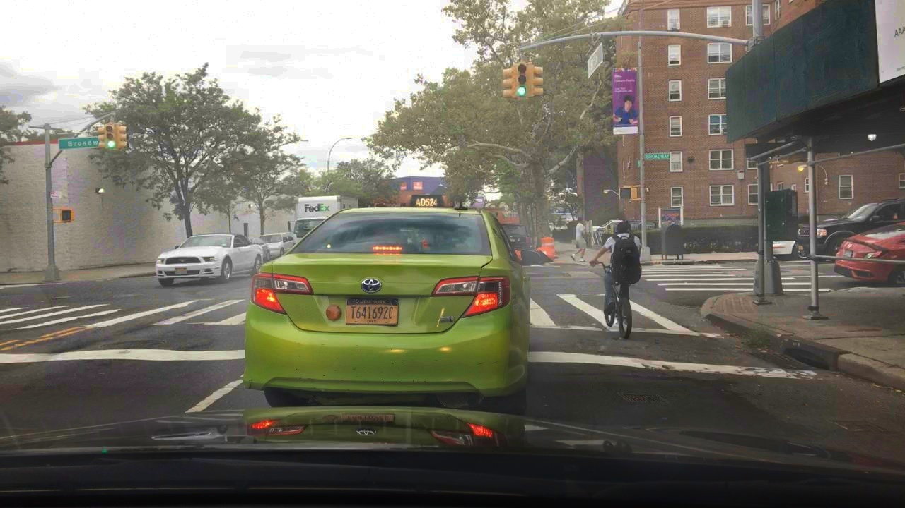
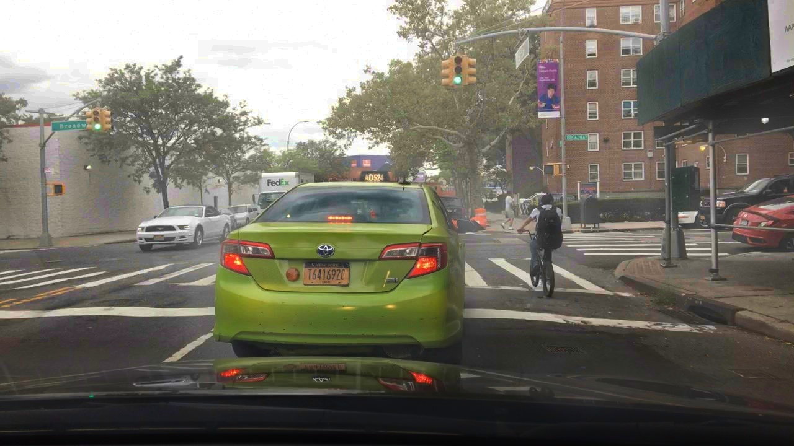

Hazing & Dehazing
Introduction
This study aims to investigate the efficiency of different dehazing techniques in enhancing semantic understanding in haze conditions with video data. We extract images from the BDD100K dataset[1] and simulate haze conditions using TCMonoDepth[2] for video depth estimation and SeeingThroughFog[3] with varying beta values (0.01, 0.02, 0.06) for haze generation. Four dehazing techniques, namely MSBDN[4], Dehamer[5], Dehamer_indoor[5], and DCP[6], are applied to the hazed images. Their performance is compared based on the Peak signal-to-noise ratio(PSNR) and Structural Similarity Index Measure (SSIM) as an evaluation metric.
This results of this study are expected to provide insights into the most efficive dehazing techniques for video data under hazing condition. It is also helping more powerful computer vision application for challenges environmental condition. The results can also guide future research on optimizing and improving dehazing methods for better semantic understanding under hazy conditions.
Hazing Techniques
Although this study focuses on dehazing techniques, it is important to understand the process of generation synthetic haze in image and video to create a realistic environment for evaluation the performance of dehazing algorithms. The following overview.
There are two main steps in the process of generating synthetic haze in image and video. The first step is to estimate the depth of the scene. The second step is to generate the haze based on the estimated depth. The following sections will introduce the two steps in detail.
TCMonoDepth[2] for Depth Estimation
The first step in simulating haze conditions for images and videos is to estimate the depth of the scene. TCMonoDepth[2] is a method for stable depth estimation for any video.
In this study, TCMonoDepth[2] is employed to estimate depth information from the images extracted from the BDD100K dataset[1]. These depth maps are then used in conjunction with SeeingThroughFog[3] to generate haze conditions with varying densities, controlled by adjusting the beta parameter.
By using TCMonoDepth[2] for depth estimation, we ensure that the synthetic haze generation process is more realistic, as it accounts for the spatial distribution of objects in the scene. This approach allows for a more accurate evaluation of the dehazing techniques' performance when applied to video data affected by haze conditions.
SeeingThroughFog[3] for generate the haze
The second step in simulating haze conditions for images and videos is to generate the haze based on the estimated depth. SeeingThroughFog[3] is a method for generating synthetic haze in images and videos.
In this study, SeeingThroughFog[3] is used in conjunction with TCMonoDepth[2] to generate hazy images from the BDD100K dataset[1] using various beta values (0.05, 0.01, 0.02, 0.06). These hazy images are then processed using different dehazing techniques, and their performance is evaluated using the Peak Signal-to-Noise Ratio (PSNR) and Structural Similarity Index Measure (SSIM).
Dehazing Techniques
In this study, we evaluate the performance of several dehazing techniques when applied to hazy images generated using TCMonoDepth[2] and SeeingThroughFog[3]. These techniques are designed to remove the haze and improve the visibility of the underlying scene. The dehazing methods considered in this study include:
MSBDN-DFF
This is a Multi-Scale Boosted Dehazing Network with Dense Feature Fusion based on the U-Net architecture to address the image dehazing problem.
Dehamer
This is a DeHamer for single image dehazing that combines Convolutional Neural Networks (CNNs) and Transformer.
Dehamer_indoor
Ditto, with different training weight
DCP (Dark Channel Prior)
This is a Dark Channel Prior for single image haze removal that is based on the dark channel prior model.
Peak Signal-to-Noise Ratio (PSNR)
PSNR is a widely used metric to measure the quality of reconstructed or processed images by comparing them to their original versions. It is defined as the ratio between the maximum possible power of a signal and the power of corrupting noise that affects the fidelity of its representation. PSNR is usually expressed in decibels (dB).[7]
Structural Similarity Index Measure (SSIM)
SSIM is calculated by comparing two images (e.g., a reference image and a processed image) and quantifying the similarity in terms of luminance, contrast, and structural information. SSIM values range from -1 to 1, with 1 indicating a perfect match between the two images.[8]
In this study, we will use SSIM to evaluate the performance of the selected dehazing techniques (MSBDN , Dehamer, Dehamer_indoor, and DCP)by comparing the dehazed images with the original, clear images from the BDD100K dataset[1]. A higher SSIM value indicates better dehazing performance, as it suggests that the processed image is more similar to the original image in terms of structure, contrast, and luminance. Higher PSNR values indicate better image quality, as they represent a lower level of noise or distortion between the original and processed images. This metric allows for a quantitative assessment of the dehazing techniques' efficiency and effectiveness in restoring image quality under various haze conditions.
Methodology
Extracting Images from the BDD100K Dataset
Introduced in the BDD100K click me
Customizing TCMonoDepth[2] and SeeingThroughFog[3] for Efficient Haze Generation
After extracting the images from the BDD100K dataset, we generate hazing images by applying a customized version of TCMonoDepth for video depth estimation and SeeingThroughFog for haze generation.
Depth estimation with customized TCMonoDepth: For each extracted image, we use our modified version of TCMonoDepth to estimate the depth map. The original TCMonoDepth was designed to return a GIF and video; however, we refactored it to return depth map data instead. This depth map represents the distance between the camera and objects in the scene, providing essential information for simulating realistic haze conditions. The advantage is that TCMonoDepth is trained on a large dataset of synchronized stereo video data to accurately estimate depth maps from single images
Efficient and accurate haze generation with modified SeeingThroughFog: During our initial work with the haze generation process, we identified a problem in the calculation of haze in the original SeeingThroughFog implementation. To address this issue, we customized SeeingThroughFog by integrating the OpenCV library, which enabled us to fix the calculation problem and improve the accuracy of the generated haze.
We further optimized the haze generation process by streamlining the interaction between TCMonoDepth and SeeingThroughFog. Our customized implementation integrated TCMonoDepth's depth data output directly into the haze generation process, bypassing the need for CSV files. This allowed us to significantly reduce the processing time to 0.5 seconds per image.
We retained the core functionality of SeeingThroughFog, which uses the depth map and atmospheric properties defined by the beta parameter to calculate the attenuation and scattering coefficients of the haze.[9] The final fogged image is produced by combining the input image and the fog layer created using these coefficients with a depth-dependent blending function.
Various beta values: By varying the beta parameter in our customized SeeingThroughFog implementation, we produce hazy photos with various fog densities in order to assess the effectiveness of dehazing procedures under various haze situations. In this study, we represented a variety of haze densities from mild fog to deep fog using four distinct beta values (0.05, 0.01, 0.02, 0.06).
This is some Demo of the Haze Generation by using our customized TCMonoDepth for Video Depth Estimation and SeeingThroughFog for Haze Generation


By customizing TCMonoDepth and SeeingThroughFog, we generated a realistic and diverse set of hazy images that closely resemble real-world haze conditions more efficiently. The different beta values allow us to test the robustness of the dehazing techniques under different haze densities, providing a thorough evaluation of their performance. Our work demonstrates that we have made significant contributions to the project by improving the efficiency of the haze generation process and enabling a more accurate evaluation of the dehazing techniques.
Dehazing
After generating the hazy images, we apply the dehazing techniques to the hazy images to restore the original image quality. The dehazing techniques considered in this study include MSBDN, Dehamer, Dehamer_indoor, and DCP. These techniques are designed to remove the haze and improve the visibility of the underlying scene.
Customization and optimization of dehazing techniques: Some of the dehazing projects we employed did not output dehazed images by default. To ensure compatibility with our evaluation process and enable the use of these dehazed images in the next task, we modified the projects to output the dehazed images.
Furthermore, we optimized the dehazing process by implementing multi-threading. Our school's GPU resources were limited, which required us to use multiple GPUs to generate the dehazed images more quickly. Implementing multi-threading allowed us to significantly speed up the dehazing process and make better use of available resources.
Evaluating dehazing performance: To evaluate the performance of the dehazing techniques, we use the PSNR and SSIM metric to compare the dehazed images with the original, clear images from the BDD100K dataset[1]. A higher SSIM value indicates better dehazing performance, as it suggests that the processed image is more similar to the original image in terms of structure, contrast, and luminance. This metric allows for a quantitative assessment of the dehazing techniques' efficiency and effectiveness in restoring image quality under various haze conditions.
By customizing and optimizing the dehazing techniques and their implementation, we have made a significant contribution to the project. Our work not only ensures compatibility with the evaluation process but also improves the efficiency of the dehazing process, allowing for a more accurate and comprehensive assessment of the dehazing techniques' performance.
Results
After generating the hazy images, we apply the dehazing techniques to the hazy images to restore the original image quality. The dehazing techniques considered in this study include MSBDN , Dehamer, Dehamer_indoor, and DCP. These techniques are designed to remove the haze and improve the visibility of the underlying scene.
Results for Dehazing
To evaluate the performance of the dehazing techniques, we use the SSIM metric to compare the dehazed images with the original, clear images from the BDD100K dataset[1]. A higher SSIM value indicates better dehazing performance, as it suggests that the processed image is more similar to the original image in terms of structure, contrast, and luminance. This metric allows for a quantitative assessment of the dehazing techniques' efficiency and effectiveness in restoring image quality under various haze conditions.
| Dehazing Techniques | PSNR (dB) | SSIM | ||||
|---|---|---|---|---|---|---|
| 0.01 | 0.02 | 0.06 | 0.01 | 0.02 | 0.06 | |
| MSBDN | 28.34 | 25.60 | 11.14 | 0.93 | 0.92 | 0.68 |
| Dehamer | 25.77 | 21.72 | 7.97 | 0.91 | 0.87 | 0.57 |
| Dehamer_indoor | 23.93 | 23.01 | 18.43 | 0.89 | 0.88 | 0.81 |
| DCP | 18.41 | 19.06 | 18.68 | 0.81 | 0.84 | 0.82 |
Visual Examples
To show the performance of the dehazing techniques, we have selected some images from the BDD100K dataset[1]. The following images are the original hazy images and the dehazed images. The dehazed images are generated by the dehazing techniques. The dehazing techniques are MSBDN , Dehamer, Dehamer_indoor and DCP. These examples help demonstrate the overall visibility, color fidelity, and preservation of image details in the dehazed images.
Original and Hazing Image Comparing
MSBDN (Hazing and Dehazing)

Dehamer (Hazing and Dehazing)


Dehamer_indoor (hazing and dehazing)


DCP (hazing and dehazing)
 

Performance Analysis
- PSNR
- MSBDN exhibits the highest PSNR values for beta values of 0.01 and 0.02, which aligns with its superior SSIM performance for these haze densities. However, its PSNR score significantly drops at a beta value of 0.06, further indicating its struggle with severe haze conditions.
- DehazeNet_indoor shows a consistent performance across all beta values, with slightly lower PSNR scores than MSBDN for 0.01 and 0.02, but outperforming MSBDN at the 0.06 haze density.
- DCP has the lowest PSNR values for 0.01 and 0.02 beta values but exhibits a more stable performance across different haze densities. At a beta value of 0.06, it performs better than MSBDN in terms of PSNR.
- SSIM
- MSBDN achieves the highest SSIM scores for both 0.01 and 0.02 beta values, indicating its superior performance in removing haze and preserving image details at these haze densities.
- However, at a beta value of 0.06, MSBDN's performance significantly decreases, while DehazeNet_indoor and DCP exhibit better SSIM scores. This suggests that MSBDN might struggle in handling more severe haze conditions.
- DehazeNet_indoor performs consistently across all beta values, achieving slightly lower SSIM scores compared to MSBDN for 0.01 and 0.02 but outperforming MSBDN at the highest haze density (0.06).
- DCP exhibits the lowest SSIM scores for 0.01 and 0.02 beta values but shows a more consistent performance across varying haze densities, performing better than MSBDN at 0.06.
In conclusion, MSBDN shows the best performance in terms of SSIM and PSNR for lower haze densities (beta values of 0.01 and 0.02), but struggles with severe haze conditions (beta value of 0.06). DehazeNet_indoor demonstrates a more consistent performance across all haze densities, with slightly lower scores than MSBDN for lower haze densities but outperforming it at the highest haze density. DCP, although exhibiting the lowest performance for lower haze densities, presents a more stable performance across varying haze densities and surpasses MSBDN at the highest haze density. DCP's effectiveness in revealing objects in highly hazy images makes it a valuable method for applications where visibility and object detection are more critical than image fidelity.
To sum up, each dehazing technique has it strengths and limitation. And the choice of the most suitable method will depend on the specific application and different haze condition.
Reference
- BDD100K, "A large-scale diverse driving video database," accessed: Day Month Year. [Online]. Available: https://www.vis.xyz/bdd100k/
- Li, Y. (2021). TCMonoDepth. GitHub. https://github.com/yu-li/TCMonoDepth
- Heide, F., Wetzstein, G., & Raskar, R. (2015). SeeingThroughFog. GitHub. https://github.com/princeton-computational-imaging/SeeingThroughFog
- BookerDeWitt. (2021). MSBDN-DFF. GitHub. https://github.com/BookerDeWitt/MSBDN-DFF
- Li, C., Hu, Y., Zhang, X., & Yu, J. (2022). Dehamer. GitHub. https://github.com/Li-Chongyi/Dehamer
- Zhang, H., Wang, C., & Qi, X. (2010). image_dehaze. GitHub. https://github.com/He-Zhang/image_dehaze
- ScienceDirect. (n.d.). Peak Signal-to-Noise Ratio (PSNR). https://www.sciencedirect.com/topics/engineering/peak-signal-to-noise
- Pranjal, D. (2021, January 5). All About Structural Similarity Index (SSIM) — Theory & Code in PyTorch. SRM MIC. https://medium.com/srm-mic/all-about-structural-similarity-index-ssim-theory-code-in-pytorch-6551b455541e
- Zhang, K., Zuo, W., Chen, Y., Meng, D., & Zhang, L. (2017). Image denoising with convolutional neural networks. IEEE Transactions on Image Processing, 26(6), 3142-3155. doi: 10.1109/TIP.2017.2662206